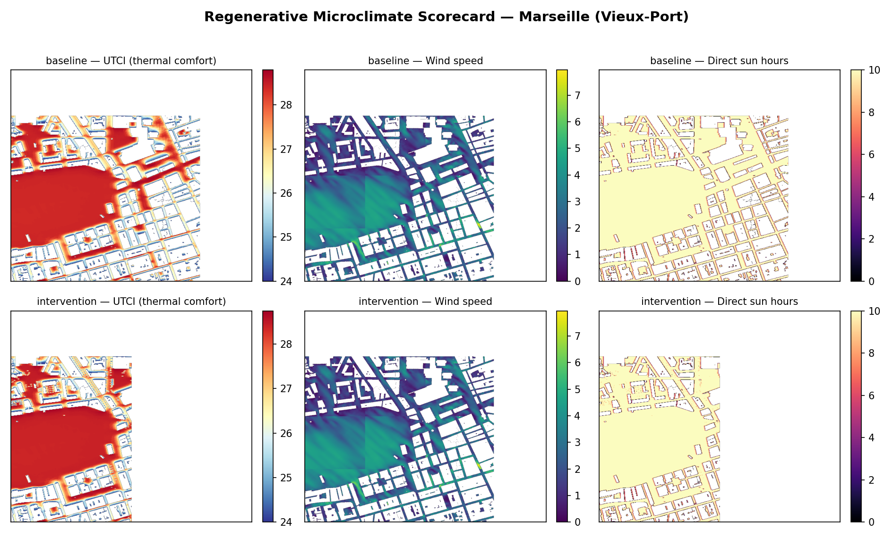

An enlarged Vieux-Port study area (~800 m, replacing the earlier ~290 m pilot) gives a far richer
microclimate field for a proper case study. The same workflow runs three analyses over the block and compares a
baseline against a tree-canopy intervention.
Workflow
6,347
buildings (context geometry)
2,194
trees (intervention layer)
~800 m
study area (≈24 tiles/scenario)

Rows: baseline (buildings only) vs. intervention (+ tree canopy).
Columns: UTCI thermal comfort, wind speed, direct sun hours — Vieux-Port, Marseille.
Thermal comfort (UTCI)
Metric
Baseline
+ Trees
Change
Mean UTCI
27.3°C
27.5°C
+0.2°C
Comfortable area (9–26°C)
20.9%
17.0%
−3.9 pts
Heat-stress area (UTCI>26°C)
79.1%
83.0%
+3.9 pts
Thermal-zone diversity (Shannon)
1.03
0.94
−8.7%
A counterintuitive result — and why it matters. Over this larger, denser block the canopy
intervention raised modeled heat-stress area by 3.9 points rather than lowering it. Two factors explain it,
and both are good teaching points:
Coverage shift (measurement artifact). Tree canopy masks cells out of the UTCI grid
(the intervention panel resolves fewer cells), so the percentages are not computed over an identical cell set
— the comparison is not strictly like-for-like.
Plausible physics. In dense Mediterranean street canyons, canopy can reduce sky-view and
ventilation, trapping daytime radiant heat — cooling is not guaranteed by simply adding trees.
The honest conclusion: "add trees" is not automatically regenerative; placement, density and street
geometry decide the outcome — exactly the evidence-based judgement the module asks students to make.
Wind & Solar
Metric
Baseline
+ Trees
Mean wind speed
2.65 m/s
2.65 m/s
Mean direct sun hours
9.14 h
9.35 h
Method
One run_area_and_wait() call per analysis over the ~800 m Vieux-Port polygon.
Buildings and weather are injected for all runs (thermal-comfort requires geometry); vegetation is injected only for the
intervention. Outputs are merged NumPy grids scored by regenerative_metrics.py
(UTCI bands, heat-stress %, Alberti assembly index). Weather: nearest EPW station
(Marseille-Provence AP TMYx).